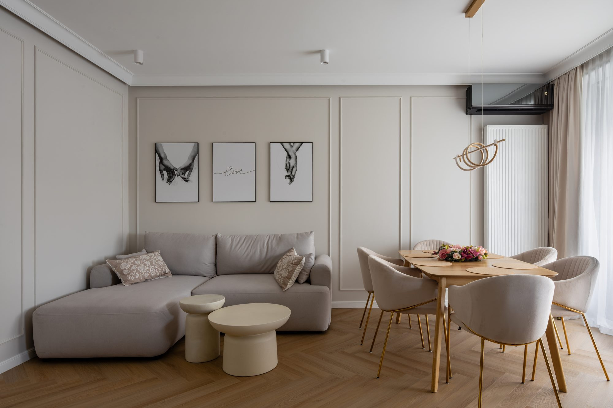
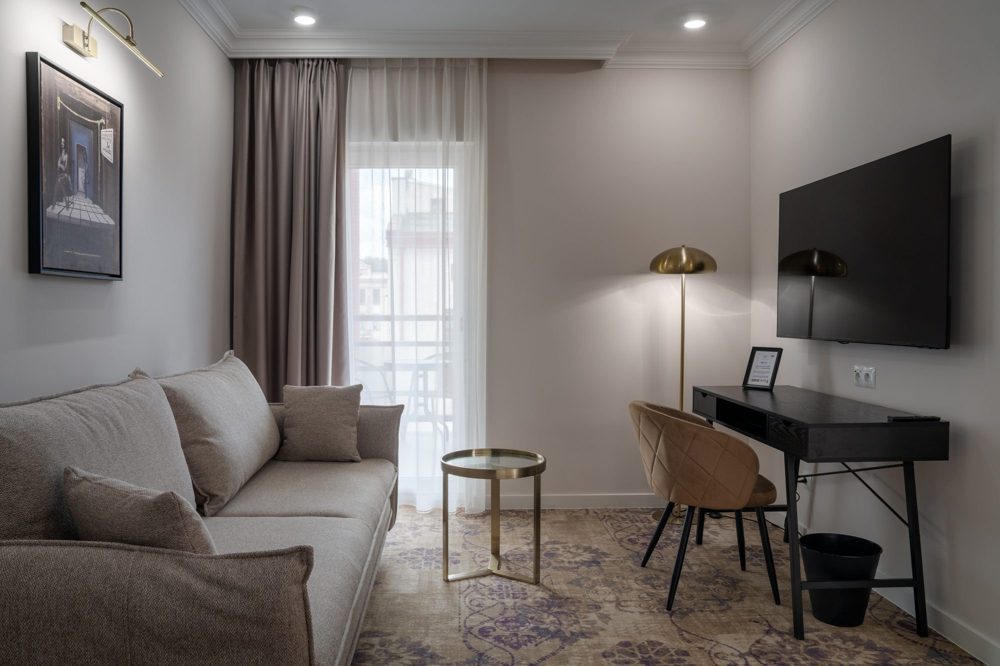

Fotografuję wnętrza takie, jakie są.
Nazywam się Mariusz Świerguła. Fotografuję wnętrza hoteli, apartamentów i biur w Łodzi i w całej Polsce. Proste piony, kolor zgodny z materiałem, światło tego miejsca. Podczas jednej wizyty powstają zdjęcia przestrzeni i ludzi, którzy w niej pracują.
Realizacja
Apartament w pięciu kadrach


Do uzupełnienia: nazwa obiektu, miasto, projektant
Hotele, apartamenty, biura.


Do wymianyBiuro: realizacja 8 do 15 kadrów
Do wymianyHotel: lobby, recepcja, restauracja
Do wymianyLudzie w miejscu: zespół w swojej przestrzeni
Do wymianyUjęcie o zmierzchu
Do wymianyDetale materiałów, 3 do 4 kadry
Do wymianyWejście albo elewacja
Jak wygląda sesja wnętrz?
Rozmowa
Gdzie trafią zdjęcia i kto je zobaczy: gość hotelu, najemca, inwestor.
Miejsce i światło
Często oglądam obiekt wcześniej. Fotografuję w świetle, które to wnętrze naprawdę ma.
Zdjęcia
Nie dodaję mebli ani elementów, których tam nie ma. Retusz tylko uzgodniony.